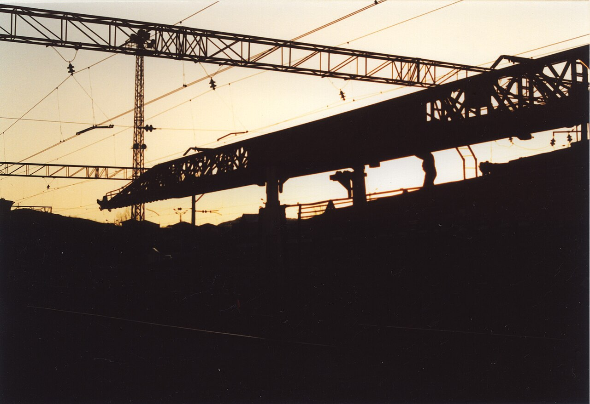
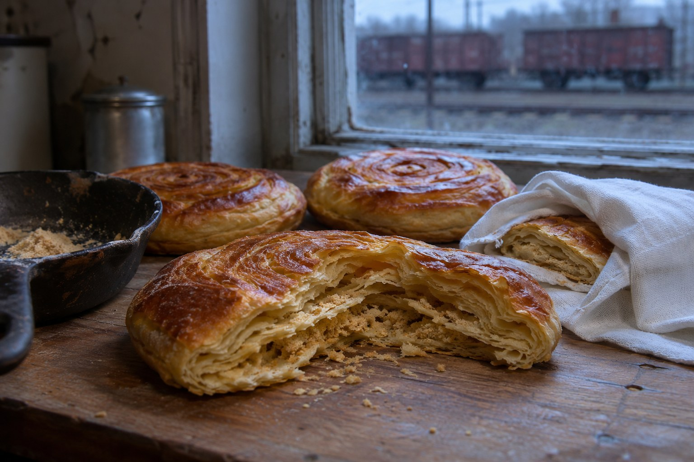

Станция

Мешайте, мешайте, не останавливайтесь. Мука должна пожелтеть и запахнуть орехом, тогда ещё минуту — и снимать. Сын у меня бросает через полминуты, говорит: готово. Ничего не готово, сырая мука в кете скрипит на зубах, как песок. А у вас рука терпеливая. Сразу видно человека, который сидит над бумагой, а не гоняет грузовики.
Грузовики — это как раз сын, Ильяс. Через Вале в Турцию и обратно, до границы отсюда полчаса. Сегодня он в рейсе, а то бы сам вам рассказал, как он мне муку жарит. Сестра прилетает ночью в Тбилиси, встречать её поедет сосед, утром будут здесь. Завтра пятнадцатое ноября. В этот день наши приезжают кто откуда, встречаются, сидят. Сестра двадцать два года собиралась и наконец собралась.
Вы, когда шли к нам, вагоны видели? Товарные, на запасном пути. Вот с этих путей моего отца и увезли. Ему было десять лет. Ночью пришли грузовики, всех посадили и привезли сюда, в Ахалцихе, а тут уже стоял поезд. Наше село выше Адигени, по реке, отец до конца жизни показывал рукой туда, за гору, и говорил: «Там». Как будто я сама не знала.
Бабушка Фатьма, его мать, за ту ночь успела испечь кете. Ей дали часа два, не больше. Мяса не было, сыра не было, была мука и было масло. Она нажарила муки и положила её внутрь, вместо начинки. У нас так всегда пекли, когда больше ничего нет, это не она придумала. Кете долго не черствеет, её для дороги и делают. Отец носил свою за пазухой и отламывал по крошке. Последний кусок он съел, когда за окном уже пошла степь. Сколько дней ехали, он потом так и не сосчитал.
Младшую сестру отца, Хатидже, похоронили по дороге, на какой-то станции. Названия отец не знал, поезд стоял недолго. Он потом всю жизнь читал названия станций, вслух, в любом поезде. Мама над ним смеялась, а потом перестала.
Я родилась в Ферганской долине, в пятьдесят шестом. Мне семьдесят. Отец там работал на хлопке, потом шофёром в колхозе. Нас там звали турками, по-узбекски говорили все, и я тоже, лучше, чем по-русски. Узбекский плов мы потом увезли с собой везде, только варим его по-своему, без зиры. Я узбекам говорю: у вас плов, у нас плов, просто у нас без претензий. Они обижаются.
Домой отца не пускали. Ссылку сняли в тот год, когда я родилась, а ехать в Грузию было нельзя, только куда-нибудь ещё. Он ездил в Москву с другими нашими, писал письма, возвращался и садился во дворе. Мама говорила: опять приехал со своим «там».
Замуж я вышла в семьдесят седьмом, за Рашида из соседнего кишлака, тоже нашего. Свекровь пекла кете с сыром и с картошкой, а над нашей, с мукой, смеялась: бедняцкая. Отец ей ответил: бедняцкая — это когда и муки нет. Больше они про кете не разговаривали, но через много лет, на свадьбу Ильяса, свекровь испекла с мукой. Я видела.
В восемьдесят девятом году, в июне, в Фергане начались погромы, и нас вывозили. Опять на станции, опять в вагонах, только в этот раз солдаты охраняли нас, а не от нас. Отец сидел у окна и снова читал названия. Ему было пятьдесят пять, и это была его вторая дорога. Кете в тот раз испечь не успели, первый раз в жизни. Отец сказал: значит, дорога будет плохая. Она и была плохая.
На Кубани, в станице под Абинском, мы прожили двадцать лет без прописки: люди там как люди, а бумаги у них злые.
Потом американцы стали брать наших к себе, и сестра уехала. Гюльсюм, она младше меня на три года. Сначала в Пенсильванию, потом в Огайо, там у неё дом, внуки, муж держит мастерскую. Первое письмо она прислала с фотографией холодильника. Написала: «У нас холодильник больше, чем был дом в Фергане». Я ей ответила: «Ну и живи в холодильнике».
Кете я ей в дорогу испекла, как положено, четыре штуки. В Филадельфии на таможне её нашла собака. Отобрали всё. Гюльсюм потом писала: «Американская собака съела нашу кете, и пусть, теперь она знает, что такое дорога». Не знаю, съела ли. Думаю, выбросили.
Звали и нас, анкеты были заполнены. Отец сказал: Америка — это дальше, а мне надо назад. Мы ждали, пока в Грузии примут закон, потом ждали бумаг. Рашид не дождался, умер за год до закона, там его и похоронили. Он говорил, что ему везде хорошо, лишь бы не трогали. В девятом году приехали.
Автобус остановился у станции, и отец пошёл к путям. Мы стоим с вещами, Ильяс с сумками, а он стоит и смотрит на рельсы. Я подошла, взяла его за рукав. Он сказал: «Станция не виновата, она только рельсы держит». И мы купили дом здесь, у товарной станции, полдома, вторую половину Ильяс достраивал три года. Отец мог бы выбрать любое место, а выбрал это. Я не спорила. Он лучше знал, откуда начинать.
Первую зиму он просыпался от каждого гудка. Поезда тут ходят редко, больше ночью, с цистернами. Гудок — он сидит на кровати. Я ему: папа, это не за нами. Он: знаю, знаю. А весной перестал просыпаться и сказал: пусть гудят, я дома.
Бумаги в Грузии тоже были. Сначала дали статус, через несколько лет гражданство, только условное: сначала откажись от прежнего, тогда получишь новое. Я отказалась и полгода ходила совсем без паспорта, ни туда, ни сюда. Соседка Нателла сказала: «Зато теперь ты просто человек». Я ей: «Просто человека в больницу не берут». Потом паспорт пришёл, она принесла торт. Чтобы получить один паспорт, оказывается, надо побыть совсем без.
Нателла живёт через забор. Первый год она звала меня «татаркой», и не со зла, здесь всех наших так звали, по привычке. Я поправляла: ахыска. Она говорила: «Я такого слова не знаю». Я говорила: «Ахалцихе знаешь? Вот это оно и есть, только по-нашему». Она подумала и больше так не называла. Теперь её внучка Нино ходит ко мне учить турецкий, хочет в Стамбул, в университет. Нателла смотрит через забор и говорит мужу: «Видишь, татарка нашу девочку в Турцию увезёт». Это у неё шутка такая, я привыкла.
Муж у Нателлы, Гурам, возил нас в отцовское село на своей «Ниве». Это было в десятом году, весной. Дорога там тогда была плохая, отец всю дорогу молчал и держался за ручку над дверью. Села как такового уже не было, того, что он помнил. Стояли новые дома, жили грузины, давно, с детьми и внуками. Отец ходил по улице, искал родник. Родник нашёл: камень над ним тот же, с выемкой, туда ставили кувшин. Отец положил руку в эту выемку и долго не вынимал.
Из ближнего дома вышла старуха, постарше отца. Гурам ей объяснил, кто мы. Она ничего не сказала, ушла в дом и вынесла груши в подоле. Сказала: «Это дерево ещё ваше». Груша стояла у неё во дворе, старая, наполовину сухая. Мы сели на скамейку у ворот, все вместе, и ели груши. Никто ни перед кем не извинялся, не за что было. Отец откусил и сказал: «Кислые. Такие и были». Старуха засмеялась, первый раз за всё время.
Отец умер через четыре года. Похоронили его здесь. Он вернулся в семьдесят пять лет и прожил дома пять. Мне говорят: мало. Я говорю: у других и пяти не было.
Внук Эмин родился уже тут. В школе он Эмо, дома Эмин, в документах как записали, так и записали. По-грузински он говорит лучше всех в доме и меня поправляет: «Бабушка, не так, у тебя выходит как у туристки». Дома мы говорим по-турецки, с Нателлой по-русски, с Нино я учу турецкий через грузинский, которого сама толком не знаю. Внуки Гюльсюм пишут мне по-английски, Эмо переводит и половину, по-моему, сочиняет. Когда у нас свадьба, за столом пять языков, а понимают все одно и то же: когда несут плов.
Всё, снимайте муку. Видите, какая? Как мокрый песок, и пахнет. Пусть остынет, иначе тесто порвётся. Тесто давно подошло, пока я вам рассказывала.
Вы тоже, наверное, с одной сумкой приехали? В Тбилиси, из России. У всех сначала одна сумка, потом обрастаешь, а потом смотришь и думаешь: что из этого я возьму, если опять. Я каждый раз думаю. Беру сковородку, ту, на которой вы сейчас жарили. Её мама везла из Ферганы на Кубань, а я с Кубани сюда. Ручку Ильяс менял два раза, а дно то же.
Раскатываю тонко, мажу маслом, сыплю муку, сворачиваю жгутом, жгут улиткой. Улитку ладонью прижать и раскатать ещё раз, тогда внутри будут слои. Вот эту, первую, кривую, я потом сама съем. Вам будет вторая, она ровнее, и следующие ровные тоже ваши. Гостю кривое не дают, это у нас ещё с тех мест.
Одну, самую большую, я заверну в полотенце для Гюльсюм. Завтра посидим, послезавтра она полетит обратно в своё Огайо. Отец уезжал с этой станции с кете, и сестра уедет с кете. Только теперь у неё обратный билет.
Запоминайте, как делается. Мука вместо начинки — это когда больше ничего нет. А потом привыкаешь, и другой уже не хочется.

Кете с жареной мукой
На 3 кете
Что нужно
Для теста:
- мука пшеничная — 600 г
- молоко тёплое — 200 мл
- вода тёплая — 150 мл
- дрожжи сухие — 7 г
- сахар — 1 ч. л.
- соль — 1 ч. л.
- масло растительное — 2 ст. л.
- яйцо — 1 (белок в тесто, желток для смазки)
Для начинки:
- мука пшеничная — 200 г
- масло сливочное — 100 г
- соль — щепоть
Для прослойки:
- масло сливочное растопленное — 120 г
Как делать
1. Дрожжи и сахар развести в тёплой воде, через 10 минут влить молоко, растительное масло, белок, посолить. Всыпать муку частями и замесить мягкое тесто, которое не липнет к рукам. Накрыть и оставить в тепле на час, пока не увеличится вдвое.
2. Начинка. На слабом огне растопить 100 г сливочного масла, всыпать муку и жарить, непрерывно помешивая, 10–12 минут, пока мука не станет цвета кофе с молоком и не запахнет орехом. Посолить, снять с огня, остудить. Начинка должна быть рассыпчатой, как влажный песок.
3. Разделить тесто на три части. Каждую раскатать как можно тоньше, в круг около 45 см.
4. Смазать круг растопленным маслом, посыпать третью начинки, свернуть плотным рулетом, рулет — улиткой. Прижать улитку ладонью и раскатать в лепёшку толщиной 2–2,5 см и диаметром 25–28 см. В печи она поднимется до 3–4 см.
5. Выложить на противень с пекарской бумагой, дать постоять 20 минут, смазать желтком.
6. Печь при 190° 35–40 минут, до глянцевого тёмно-золотого цвета.
7. Горячими не резать: начинка рассыплется. Остывшие кете завернуть в полотенце, так они несколько дней остаются мягкими.
Кете берут в дорогу. Её не надо разогревать.
Тбилиси, ноябрь 2026